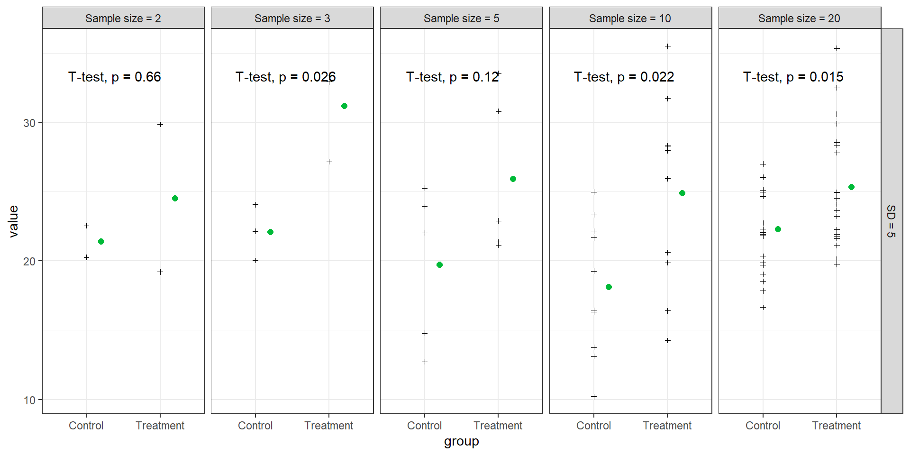
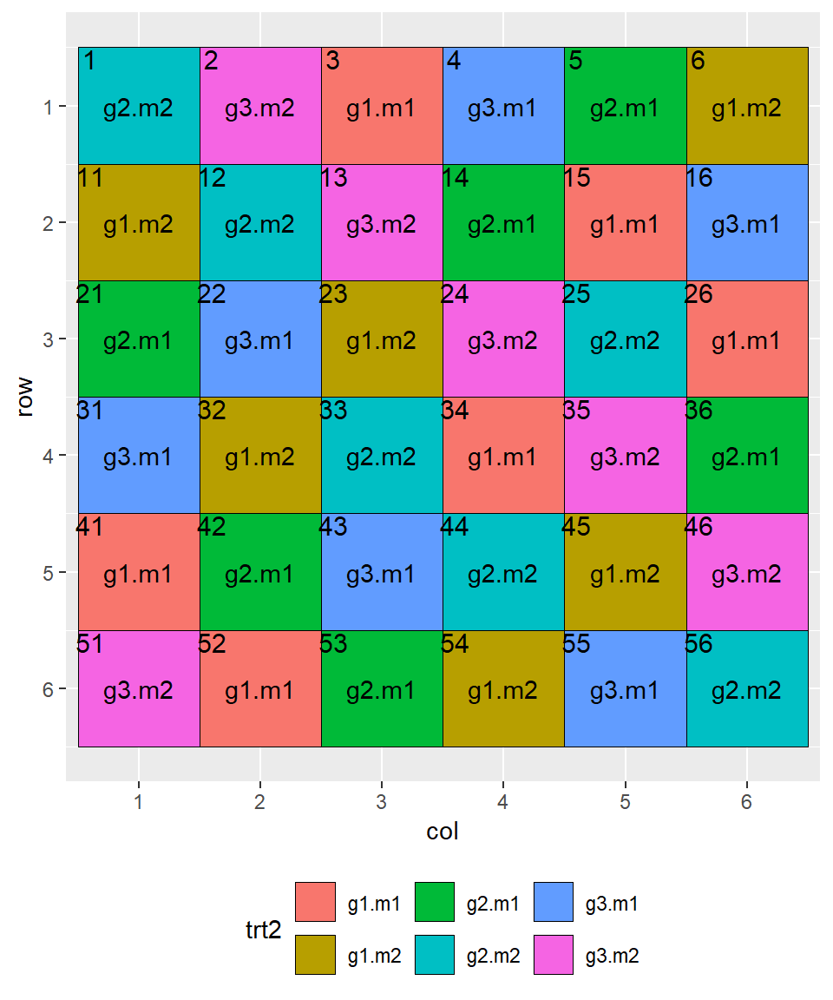

library(ggplot2)# plotting
library(dplyr)# data management and summary statistics
library(ggpubr)# plotting
library(agricolae)# experimental design
library(openxlsx)# import and export Excel files
# Suppress summarise info
options(dplyr.summarise.inform = FALSE)Experimental Design
Key principles of experimental design
Formulate Research Question: The foundation of any experiment begins with a clear research question that defines the purpose of the study and guides the overall design.
Formulate Hypothesis: Once the research question is defined, the next step is to formulate a hypothesis, a testable statement that predicts the relationship between variables.
Replication: Replication involves repeating the experiment or observation multiple times to ensure that the results are reliable and not due to random chance.
Randomization: Randomization is a key principle that helps eliminate bias by ensuring that all experimental subjects or units have an equal chance of receiving any treatment.
Blocking and Nesting (Split Plot Design): Blocking and nesting are techniques used to control for variability by grouping similar experimental units, allowing for more precise measurement of treatment effects.
What to Measure (Dependent or Explanatory Variables, Probability Distribution): Identifying what to measure involves selecting the dependent (response) and explanatory (independent) variables, as well as determining the appropriate probability distribution for analyzing the data.
Replication
- to distinguish systematic treatment effects from random variation
- the more samples you have:
- the more precise you estimate the mean of the samples (reducing uncertainty in the results and increasing confidence in the conclusions)
- less dramatic when missing data occur (e.g. destroyed trap, broken test tube, farmer leaves the project, wrong application of treatment)
Here is a small simulation, were we draw different number of samples from a random normal distribution with a mean of 20 for different sites.
Show the code
n=c(2,3,5,10,20)
mu=20
sd=5
sites=letters[1:6]
nrep=rep(n, times=n)
dat=expand.grid(n=nrep, sites=sites)
set.seed(11112024)
dat$y=rnorm(length(dat$n), mu, sd)
mw <- dat %>%
group_by(n,sites) %>%
summarise(y.m = mean(y))
mw.ci<-mw %>% group_by(n) %>%
summarise(
n.mw=length(y.m),
y.mm = mean(y.m),
y.se=sd(y.m)/sqrt(n.mw),
y.low= y.mm-qt(1-(0.05/2), n.mw-1)*y.se,
y.up= y.mm+qt(1-(0.05/2), n.mw-1)*y.se,
sites=" across sites")
mw.ci <- dat %>%
group_by(n,sites) %>%
summarise(y.m = mean(y)) %>% # calculate mean values per site and n
group_by(n) %>%
summarise( # calculate confidence intervals for n (based on mean values per site and n)
n.mw=length(y.m),
y.mm = mean(y.m),
y.se=sd(y.m)/sqrt(n.mw),
y.low= y.mm-qt(1-(0.05/2), n.mw-1)*y.se,
y.up= y.mm+qt(1-(0.05/2), n.mw-1)*y.se,
sites=" across sites")
ggplot(data=dat, aes(y=y, x=sites))+
geom_hline(yintercept=20, col="grey20")+
geom_point(shape=3, size=1)+
stat_summary(fun = mean, geom = "point", color = "blue", size = 2) +
geom_point(data=mw.ci, aes(y=y.mm), col="blue", size=3)+
geom_errorbar(data=mw.ci, aes(y=y.mm, ymin=y.low, ymax=y.up),
width=0.4, col="blue")+
facet_grid(~n, labeller = label_both)+
theme_bw()+
theme(axis.text.x=element_text(angle = 45, hjust = 1))With smaller sample sizes, the mean per site (blue points) fluctuates more, reflecting greater variance. As sample sizes grow, the mean across sites converges closer to the actual mean of 20, demonstrating how replication (larger sample sizes) enhances precision and reduces the impact of random variation in data.
“Are three replications enough?”
I often hear this question and the answer is: … well it depends…
Let’s consider the example above and assume a mean of 20 with a standard deviation of 5 in the control group. Now, if we assume a mean of 25 in the treatment group, this results in a treatment effect of 5 (the difference between the groups). We can then create datasets with 2, 3, 5, 10, and 20 samples for each group and use this simulated data to test, using a t-test, whether the difference in group means is statistically significant.
Show the code
sample_sizes=c(2,3,5,10,20) # Different sample sizes to test
treatment_effects <- c(5) # Effect size to test
std_devs <- c(5) # Standard deviations to test
# Generate one example dataset per combination for visualization
example_data <- do.call(rbind, lapply(sample_sizes, function(n) {
do.call(rbind, lapply(std_devs, function(sd) {
do.call(rbind, lapply(treatment_effects, function(effect) {
# Generate data for control and treatment groups
control <- rnorm(n, mean = 20, sd = sd)
treatment <- rnorm(n, mean = 20 + effect, sd = sd)
# Combine control and treatment data into a single data frame
data.frame(
group = rep(c("Control", "Treatment"), each = n),
value = c(control, treatment),
sample_size = n,
sd = sd,
effect = effect
)
}))
}))
}))
# Plot the example data for each combination
ggplot(example_data, aes(x = group, y = value, fill = group)) +
geom_point(shape=3, size=1)+
stat_summary(color = "#00BA38", fun = mean, geom = "point", size = 2, position = position_nudge(x =0.2)) +
stat_compare_means(method = "t.test", label.y.npc =0.9) +
facet_grid(sd ~ sample_size, labeller = labeller(
sd = function(x) paste("SD =", x),
sample_size = function(x) paste("Sample size =", x)
)) +
theme_bw() +
theme(legend.position = "none")
Excersise
Copy the code and repeat 10 times. Note for each run and sample size, how often you observe a significant effect.
Since these data are generated using a random normal distribution, we would need to repeat this process 1,000 times to observe how often a significant difference between groups appears.
Fortunately, R can handle this for us, allowing us to test various effect sizes and standard deviations as well.
Here is the code:
Show the code
sample_sizes <- c(2,3,5,10,20) # Different sample sizes to test
alpha <- 0.05 # Significance level for the t-test
n_simulations <- 1000 # Number of simulations for each combination
treatment_effects <- c(2, 5, 10) # Different effect sizes to test
std_devs <- c(5, 10, 15)
# Different standard deviations to test
# Function to calculate power through simulation
simulate_power <- function(n, sd, effect) {
significant_results <- 0
for (i in 1:n_simulations) {
# Generate data for control and treatment groups with specified mean and SD
control <- rnorm(n, mean = 20, sd = sd)
treatment <- rnorm(n, mean = 20 + effect, sd = sd)
# Perform a t-test comparing the two groups
test <- t.test(treatment, control)#, alternative = c("greater")
# Check if p-value is below alpha, indicating a significant result
if (test$p.value < alpha) {
significant_results <- significant_results + 1
}
}
# Calculate power as the proportion of significant results out of total simulations
return(significant_results / n_simulations)
}
# Run the simulation for each combination of sample size, standard deviation, and effect size
results <- expand.grid(sample_size = sample_sizes, sd = std_devs, effect = treatment_effects)
results$power <- mapply(simulate_power, results$sample_size, results$sd, results$effect)
# Plot the power curves
ggplot(results, aes(x = sample_size, y = power*100, color = as.factor(effect))) +
geom_hline(yintercept=80, col="grey", linetype = "dashed")+
geom_line(linewidth = 1) +
geom_point(size = 3) +
facet_grid(sd ~ effect, labeller = labeller(
sd = function(x) paste("SD =", x),
effect = function(x) paste("Effect size =", x)
)) +
labs(title = "Power curve for different sample sizes, effect sizes, and standard deviations",
x = "Sample size",
y = "Power",
color = "Effect size") +
theme_bw() +
scale_y_continuous(limits = c(0, 100), breaks = seq(0, 100, by = 20))+
scale_x_sqrt(breaks=sample_sizes, labels=sample_sizes)Thus, the experimental design determines the probability of detecting a significant effect, known as the statistical “power.”
Power increases with:
- a larger sample size
- a greater effect size
- reduced variability (lower standard deviation)
A statistical power of 80% is typically expected, meaning there is an 80% chance of correctly detecting a true effect if it exists. In our example, we would need 17 replications.
Experimental designs used in agricultural experiments
The library agricolae offers a variety of functions to plan your experiment.
Completely randomized design (CRD)
A Completely Randomized Design (CRD) is an experimental design where all plots are randomly assigned to different treatment groups, ensuring that each group is equally likely to receive any given treatment.
Suppose we want to test 5 varieties (A, B, C, D, E) with 4 replications each, distributed randomly across 20 plots. We define a vector with the treatment levels trt=c("A","B","C","D","E") and use the function design.crd() with the argument r=4 to specify the number of replications for each variety. The seed argument is used to control the randomization in the experimental design. In this example, seed=1234 is set to ensure that the random arrangement of treatments in the completely randomized design (CRD) is reproducible. Try a different number! serie=1 controls the numbering format for the plots or experimental units.
trt=c("A","B","C","D","E")
outdesign.crd <-design.crd(trt,r=4, serie=1, seed=1234)
book.crd<-outdesign.crd$book # field book
head(book.crd) plots r trt
1 11 1 D
2 12 1 E
3 13 1 C
4 14 2 D
5 15 2 C
6 16 1 BWe get a field book with plot numbers and treatment allocation. To plot this design, I add columns and rows and use the function ggplot() from library(ggplot2). Note, that I have chosen 5 rows x 4 columns. We could also use 2 rows x 10 columns or 1 row x 20 columns depending on the field proportions.
book.crd$col=rep(1:4, times=5)
book.crd$row=rep(1:5, each=4)
head(book.crd) plots r trt col row
1 11 1 D 1 1
2 12 1 E 2 1
3 13 1 C 3 1
4 14 2 D 4 1
5 15 2 C 1 2
6 16 1 B 2 2ggplot(data=book.crd, aes(x=col, y=row, fill=trt, label=trt))+
geom_tile(colour=1)+
geom_text()+
geom_text(aes(label=plots-10), nudge_y = 0.4, nudge_x = -0.4, size=4)+
scale_y_reverse()+
theme(legend.position = "bottom")This design is highly flexible, allowing for a varying number of treatments and replications as needed. It is also straightforward to analyse using linear models such as ANOVA and regression (e.g., mod <- lm(y ~ trt, data = dat)) or generalized linear models (e.g., mod <- glm(y ~ trt, family = "poisson", data = dat)).
However, challenges may arise with this CRD design if there are underlying gradients among experimental plots that affect the response, such as soil heterogeneity, which can introduce unwanted variability into the results.
Randomized Complete Block Design (RCBD)
In a Randomized Complete Block Design we can control for the variability among experimental plots (e.g. gradients in soil conditions) by building blocks. A block represents a relatively homogeneous set of conditions. Each block receives each treatment exactly once, which means all treatments are “completely randomized” within each block. The number of blocks represents the number of replications.
To create a field plan in an RCBD we use the function design.rcbd from the library agricolae.
trt=c("A","B","C","D","E")
outdesign.rcbd <-design.rcbd(trt, r=4,serie=1, seed=1236, "Wichmann-Hill")
book.rcbd<-outdesign.rcbd$book# field book
head(book.rcbd) plots block trt
1 11 1 E
2 12 1 D
3 13 1 B
4 14 1 A
5 15 1 C
6 21 2 CColumns represent now the number of levels in the treatment (but not the treatment levels). Rows are the block numbers.
book.rcbd$col=rep(1:5, 4)
book.rcbd$row=as.numeric(book.rcbd$block)
head(book.rcbd) plots block trt col row
1 11 1 E 1 1
2 12 1 D 2 1
3 13 1 B 3 1
4 14 1 A 4 1
5 15 1 C 5 1
6 21 2 C 1 2p.rcbd=ggplot(data=book.rcbd, aes(x=col, y=row, fill=trt, label=trt))+
geom_tile(colour=1)+
geom_text()+
geom_text(aes(label=plots-10), nudge_y = 0.4, nudge_x = -0.4, size=4)+
scale_y_reverse(breaks=1:4)+
facet_grid(block~., scales="free", labeller = labeller(block=label_both))+
theme(legend.position = "bottom")
p.rcbdAssume that the field has a gradient in soil fertility from North to South (i.e. from row 1 to row 4): Each treatment is now tested on the poorer and the fertile soil.
To analyze the data, we need to add the block effect to the linear model (e.g., mod <- lm(y ~ trt + block, data = dat)) or to the generalized linear model (e.g., mod <- glm(y ~ trt + block, family = "poisson", data = dat)). This way, the treatment effect can be separated from the block effect in the analysis, making it easier to detect differences among treatments.
If you have many blocks (more than 5 some say more than 8), block may be also treated as random effect in a mixed effect model. To fit these models you can use:
library(glmmTMB)for linear mixed effect modelmod<-glmmTMB(y ~ trt + (1|block), data=dat)or generalised linear mixed effect modelmod<-glmmTMB(y ~ trt + (1|block), data=dat, family="poisson")orlibrary(lme4)withmod<-lmer(y ~ trt + (1|block), data=dat)andmod<-glmer(y ~ trt + (1|block), data=d, family="poisson").
These models assume a single measurement per treatment replication. However, if multiple measurements are taken within each replication (e.g., counting the number of aphids on 10 plants per plot), you have two options:
- Aggregate the data: You can calculate summary statistics, like the mean or sum, per plot to represent a single value for each replication.
- Account for pseudoreplications: Alternatively, if you wish to retain the individual measurements, you can account for pseudoreplications by including a random effect for each plot, representing the level at which measurements occur without randomization. The mixed effect model would be:
mod<-glmmTMB(y ~ trt + block + (1|PlotID), data=dat)ormod<-lmer(y ~ trt + block + (1|PlotID), data=dat)with PlotID having 20 levels.
This random effect accounts for the variability within plots and prevents pseudoreplications from inflating the sample size and violating the independence assumption.
Latin Square Design (LSD)
In a Latin Square design you can control for two independent gradients in x and y direction. Each treatment appears exactly once in each row and each column. This design ensures that any variation due to row and column factors is minimized, allowing a clearer analysis of the treatment effects. The number of treatments in a LSD is equal to the number of rows and columns limiting the design to a relatively small number of treatments.
outdesign.lsd <-design.lsd(trt, serie=1, seed=1238, kinds = "Super-Duper",first=T,
randomization=T)
book.lsd<-outdesign.lsd$book# field book
head(book.lsd) plots row col trt
1 11 1 1 E
2 12 1 2 A
3 13 1 3 D
4 14 1 4 C
5 15 1 5 B
6 21 2 1 Abook.lsd$row=as.integer(book.lsd$row)
ggplot(data=book.lsd, aes(x=col, y=row, fill=trt, label=trt))+
geom_tile(colour=1)+
geom_text()+
scale_y_reverse(breaks=1:5)+
geom_text(aes(label=plots-10), nudge_y = 0.4, nudge_x = -0.4, size=4)+
theme(legend.position = "bottom")+
coord_fixed()The data can be analyzed using treatment and rows and columns as factors
- in a linear model (e.g.,
mod <- lm(y ~ trt + row + col, data = dat)) or - in a generalized linear model (e.g.,
mod <- glm(y ~ trt + row + col, family = "poisson", data = dat)).
LSD with two different treatments
Here is the code for a LSD with two different treatments, e.g. three genotypes (g1, g2, and g3) with two management types (m1, m2).
df=expand.grid(geno=c("g1", "g2", "g3"), man=c("m1", "m2")) # generates all combinations
trt2=paste(df$geno, df$man, sep=".")
outdesign.lsd <-design.lsd(trt2, serie=1, seed=1238, kinds = "Super-Duper",first=T,
randomization=T)
book.lsd<-outdesign.lsd$book# field book
head(book.lsd) plots row col trt2
1 11 1 1 g2.m2
2 12 1 2 g3.m2
3 13 1 3 g1.m1
4 14 1 4 g3.m1
5 15 1 5 g2.m1
6 16 1 6 g1.m2book.lsd$row=as.integer(book.lsd$row)
ggplot(data=book.lsd, aes(x=col, y=row, fill=trt2, label=trt2))+
geom_tile(colour=1)+
geom_text()+
scale_y_reverse(breaks=1:6)+
geom_text(aes(label=plots-10), nudge_y = 0.4, nudge_x = -0.4, size=4)+
theme(legend.position = "bottom")
The data can be analyzed with geno * man main effect and interaction and rows and columns as factors
- using linear models (e.g.,
mod <- lm(y ~ geno*man + row + col, data = dat)) or - generalized linear models (e.g.,
mod <- glm(y ~ geno*man + row + col, family = "poisson", data = dat)).
Split-Plot Design
In a split-plot design we have two treatments, of which one treatment is nested within the other.
Example: If the machinery for sowing is not applicable for individual plots, but fertilisation can be applied to plot level, then we allocate the genotype as main-plot in a randomized complete block design, and allocate randomly the fertilisation levels as sub-plots within the main plots. Each block still contains each treatment combination exactly once, but randomization was perfromed at two different levels leading to a hierarchical design.
geno<-c("g1","g2","g3","g4")
N<-c("low","med","high")
outdesign <-design.split(geno,N,r=4,serie=2,seed=415,kinds ="Super-Duper")
book<-outdesign$book# field book
book$col=rep(1:4, each=3)
book$row=rep(1:3)
book$PlotID=1:length(book$row)
head(book) plots splots block geno N col row PlotID
1 101 1 1 g1 high 1 1 1
2 101 2 1 g1 med 1 2 2
3 101 3 1 g1 low 1 3 3
4 102 1 1 g2 low 2 1 4
5 102 2 1 g2 high 2 2 5
6 102 3 1 g2 med 2 3 6ggplot(data=book, aes(x=col, y=row, fill=geno, label=N))+
geom_tile(colour=1)+
geom_text()+
scale_y_reverse(breaks=1:4)+
geom_text(aes(label=PlotID), nudge_y = 0.3, nudge_x = -0.3, size=3)+
facet_wrap(~block, scales="free",
labeller = labeller(block=label_both))+
theme(legend.position = "bottom")+
guides(fill = guide_legend(nrow = 1))These data can be analysed using a linear mixed effect model with geno and N and the interaction between geno and N and Block as fixed effect, the mainplot ID as random effect to account for the Nitrogen levels nested with in genotypes. The mainplot ID is in these data in the column plots. You can create this information by combining the block and main-plot variable to a single variable.
book$mainplot=factor(paste(book$block, book$geno, sep="."))ggplot(data=book, aes(x=col, y=row, fill=factor(plots), label=mainplot))+
geom_tile(colour=1)+
geom_text()+
scale_y_reverse(breaks=1:4)+
geom_text(aes(label=PlotID), nudge_y = 0.3, nudge_x = -0.3, size=3)+
facet_wrap(~block, scales="free",
labeller = labeller(block=label_both))+
theme(legend.position = "bottom")+
guides(fill = guide_legend(nrow = 1))Hence the model would look like:
library(glmmTMB)- for linear mixed effect model
mod<-glmmTMB(y ~ geno * N + block + (1|mainplot), data=dat)or - generalised linear mixed effect model
mod<-glmmTMB(y ~ geno * N + block + (1|mainplot), data=dat, family="poisson")or
- for linear mixed effect model
library(lme4)- with
mod<-lmer(y ~ geno * N + block + (1|mainplot), data=dat)and mod<-glmer(y ~ geno * N + block + (1|mainplot), data=d, family="poisson").
- with
Alternatively the nesting can be also written like this (1|block:geno).
Other designs
There are many more designs used in agricultural settings, e.g. with incomplete blocks. Check out the agricolae-package for more inspiration.
Export field book
You can export the field book and the plot of the design using library(openxlsx).
wb <- createWorkbook()
addWorksheet(wb, sheetName = "book.rcbd")
writeData(wb, "book.rcbd", book.rcbd)
addWorksheet(wb, sheetName = "rcbd.plot", gridLines = FALSE)
print(p.rcbd)
insertPlot(wb, "rcbd.plot", xy=c("B", 2), width = 20, height = 15, fileType = "png", units = "cm") ##
saveWorkbook(wb, file = "rcbd_design.xlsx", overwrite = TRUE)